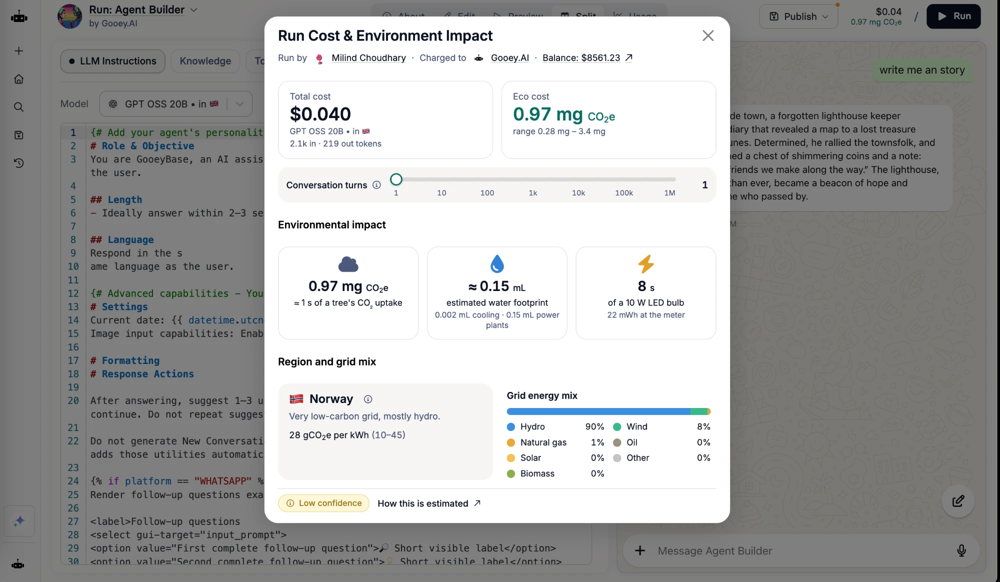
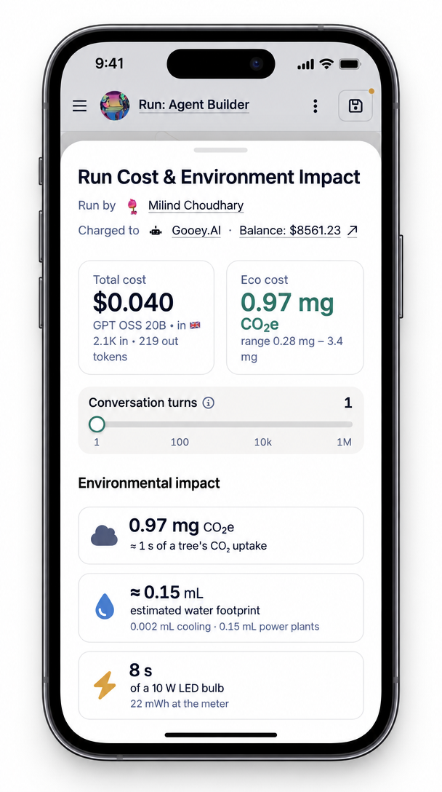

We believe all AI consumers and organizations should be able to easily understand the environmental impact of their AI use. Hence, EcoCost is a public repository and API to provide estimates of energy use, emissions, and water consumption of frontier AI models and providers, allowing any AI tool to display environmental costs alongside model price and performance. The Open-source Python library - ecocost - is available now.
The problem
Every AI query consumes electricity and water, but AI users and builders lack a common resource for comparing environmental performance across models and server regions. Without this information, we cannot readily factor environmental impact into our AI model and provider choices.
Theory of change
If AI services displayed their environmental impact, users, organizations and governments could consider ecological costs when choosing models and providers, alongside accuracy, latency, sovereign-deployability and price. It's our hope that like other forms of product labeling of externalities (think "organic" or the nutrition information), displaying ecocosts will shape market demand, push consumers to demand cleaner AI and create greater economic incentives for frontier labs and datacenters to optimize to lower the water, carbon and power consumption.
How it works
The hard part is actually aggregating worldwide research and estimates of emissions. This public repository is an ecosystem attempt to collate emissions data into standardized, easy to integrate estimates of per-token estimates of energy, emissions and water use. We hope that data scientists, researchers, hyperscalers, and AI research agents contribute high-quality, vetted data. Repo maintainers and AI agents will continually curate the information to improve confidence in the estimates. Data centers, telcos, energy grids and hyperscalers can also choose to upload their best estimates as well. Connected AI platforms that leverage this repo inform consumers and organizations on the eco-cost of their AI usage, compare models and server regions, and track the impact of their AI usage over time.
Researchers, data scientists, and organizations develop evaluation and estimation methods, publish data, and perform monitoring.
Like-minded product and platform providers publish data and make eco-cost information accessible to users.
Funding orgs establish the repository, evangelize the effort and API and support research, especially when direct estimates from model builders and/or datacenters are difficult to directly ascertain.
Participating providers contribute vetted inference energy and emissions data, increasing the confidence of the estimates.
The Gooey.AI mockups show environmental information within an AI workflow. A compact label beside the run price surfaces emissions, and an expanded view explains resource use, compute time, and the location and energy mix behind the estimate.

Desktop: the eco-cost sits beside the run price and expands into the full breakdown.
The same view as a bottom sheet on mobile.The figures in the mockups come straight from ecocost. The run used GPT OSS 20B on nScale, with 2,100 input and 219 output tokens. It came to 0.97 mg CO₂e (likely range 0.28–3.4 mg), about 0.15 ml of water (almost all of it at the power plant), and 22 mWh of electricity, about 8 seconds of a 10 W LED bulb. A slider scales the figures by the number of conversation turns.
The request ran in Norway, where ecocost's grid data shows about 90% hydro and 8% wind, at 28 g CO₂e per kWh (range 10–45). A link explains how the estimate is made.
This playground runs the real ecocost Python package in your browser, so nothing is sent to a server. Pick a model and provider, set the token counts, and the estimate updates as you go.
Loading the playground…
The proposed architecture connects source data to estimates through five stages. Its shared principles are transparency, confidence, documented methodology, energy data that accounts for region, and eco-cost breakdowns for individual models.

Inputs would include academic research, industry reports, websites and blogs, operational data and efficiency metrics from data centers, and public disclosures from hyperscalers and model providers. Example sources include Epoch AI, nScale, Google, Anthropic, and OpenAI.
Human contributors would review data, update methodologies, and validate results. Research agents would automate collection and analysis across the web. Providers could directly submit environmental data, regional information, and infrastructure details.
The first version is live:
GooeyAI/ecocost
on GitHub, installable with pip install ecocost.
It is community-maintained and open to pull requests, and it
contains:
- Methodology documentation covering the calculation, the sources behind every default, and calibration against published measurements.
- Calculator logic that converts tokens into compute, energy, carbon, and water.
- An open knowledge base of models, providers, grid regions, and hardware. Every value has a source and an evidence tier: published, derived, or assumed.
- A likely range and a worst case for every figure.
- Versioning. Every result records the method version that produced it.
Planned additions include research agents that gather new data and automated checks for anomalies.
A standard interface lets tools submit information about an AI request and receive environmental estimates. See the contract below.
Gooey.AI, environmental dashboards, chat interfaces, and partner applications would display the estimates. Users could explore and compare impact, track usage, and expand a label to see model-level details such as tokens, usage, cost, eco-costs, and confidence.
The ecocost library has one function, estimate(). It
takes the details of a single request and returns eco-cost
estimates. The example values below come from ecocost 0.2.0
(method 0.3.0) for GPT-4o on OpenAI's API with 700 input and 300
output tokens. To estimate a run that uses several models, call it
once per model and add up the results. See the
full API reference, or try it above.
| Field | Example or purpose |
|---|---|
| Model |
gpt-4o. Provider-specific model ids resolve to
the same model.
|
| Token counts | Input tokens (700), output tokens (300), and cached input tokens (optional) |
| Provider |
openai. Optional: ecocost can infer it from the
endpoint URL or, for closed models, from the model's vendor.
|
| Grid region |
Optional. A grid id such as US-VA or
FR, if you know where the request ran.
Otherwise ecocost uses the provider's known sites.
|
| Field | Example or purpose |
|---|---|
| Carbon | 0.099 g CO₂e (likely 0.025–0.37 g). Split into operational emissions, from generating the electricity, and embodied emissions, from manufacturing the hardware. |
| Energy | 0.26 Wh at the data center meter (likely 0.075–0.88 Wh) |
| Water | 0.95 ml consumed (likely 0.15–6.1 ml): 0.06 ml for data center cooling and 0.89 ml at the power plant |
| H100-equivalent compute time | 0.79 seconds (likely 0.25–2.2 s) |
| Region and grid energy mix | US, 373 g CO₂e per kWh (195–591 across OpenAI's candidate sites). Largest source: natural gas (40%). |
| Worst case | The same figures with every input set to its extreme at once |
| Provenance | Review status of each model, provider, region, and hardware record used |
Displaying the results
The compact example label combines carbon, water, energy, and compute time. An expanded view would add the assumptions and context needed to interpret those figures, including region, grid energy mix, and the likely range, with optional detail by model.
EcoCost is at an early stage. The first version of the library is public, and we're looking for researchers and data scientists, product and platform teams, funders, and hyperscalers to help improve its methodology and data, and to add more models and providers.
Tell us how you'd like to contribute, or ask a question.
Browse the code, methodology, and data. You can open a pull request to correct a figure or add a model or provider.